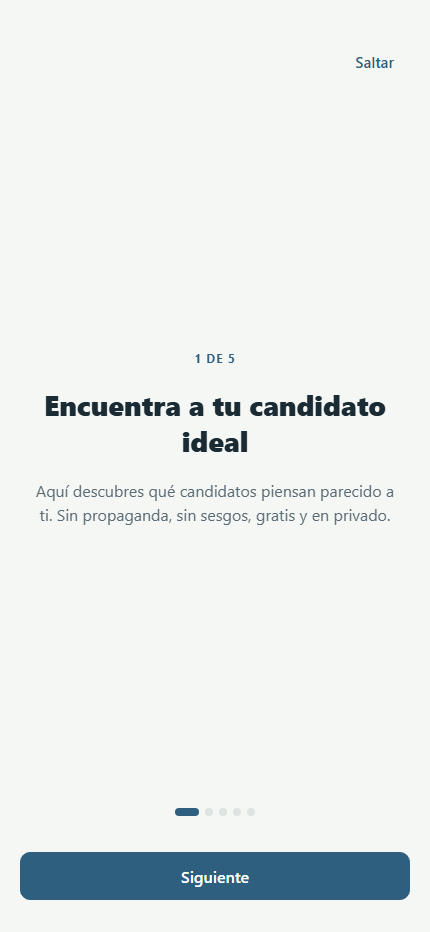

Visual Identity
Migration Audit
VotoAFin Frontend
Análisis completo basado en código real del repositorio tinder-decisivo/frontend. Incluye prueba real de rebranding con identidad temporal "Volcán Cívico" y capturas comparativas.
1. Resumen Ejecutivo
VotoAFin tiene un sistema de tokens visuales muy bien diseñado. El 90% de los componentes
consume colores vía useThemeColors() y tipografía vía typography.*.
El rebranding completo es factible en 1-2 días de trabajo.
El ejercicio real de rebrand ejecutado compiló con 0 errores y el cambio visual fue inmediato.
El archivo src/domain/affinity.ts replica manualmente los 10 valores hex de
src/theme/colors.ts (affinity + affinityDark). Un cambio en los tokens de afinidad
requiere modificar dos archivos, con alto riesgo de desincronización silenciosa.
El sistema de tipografía centraliza tamaños y pesos correctamente, pero no define fontFamily como token. La app usa el system font de React Native por defecto implícito — ningún componente puede cambiar la fuente sin tocar cada StyleSheet individualmente.
2. Auditoría de Colores
2.1 Sistema de tokens — Colores centralizados
Archivo principal: src/theme/colors.ts (9.0 KB, ~200 líneas de tokens)
| Capa | Tokens | Descripción |
|---|---|---|
| Semánticos light | bg, card, accent, accent2, primary, primaryHover, secondary, brandAccent, text, textSecondary, textTertiary, textOnPrimary, border, border2, success, warning, danger, info | 18 tokens. Single source of truth para la UI. |
| Semánticos dark | 18 overrides en dark {} | Overrides completos para dark mode. Grays invertidos. |
| Escala de grises | gray50...gray900 (10 pasos) | Light y dark independientes. |
| Tint scales | primary, secondary, success, warning, danger, info — 50-900 (60 tokens) | Escala completa para variantes. Nunca usados directamente en UI salvo ProfileHero. |
| Affinity tokens | affinity.aff1-5 + affinityDark.aff1-5 | Tokens dedicados para tiers de match electoral. 10 valores. |
| Hook reactivo | useThemeColors() | Cambia automáticamente entre light/dark. Implementado correctamente. |
2.2 Paleta actual (light mode)
2.3 Colores hardcodeados — inventario completo
| Archivo | Línea | Valor | Contexto | Severidad | Justificado? |
|---|---|---|---|---|---|
domain/affinity.ts | 22-35 | #3A9E7A, #6B9B7A, #C89B5C, #D07777, #B85C5C (x2 light+dark) |
Tabla AFFINITY_LIGHT/DARK — duplica exactamente los tokens de theme/colors.ts |
CRITICO | No — violacion DRY pura |
organisms/HomeHeroSection.tsx | 52-59 | #1C3A52, #FFFFFF, rgba(255,255,255,0.55/0.10/0.20) |
Constantes de modulo HERO_BG, HERO_TEXT, HERO_TEXT_SUB, pills | ALTO | Parcialmente — hero es identidad de marca, pero HERO_BG deberia ser token |
screens/Home/HomeMatchLocked.tsx | 103 | rgba(28, 58, 82, 0.92) |
Overlay del lock. Es HERO_BG (#1C3A52) escrito en rgba manual | ALTO | No — deberia referenciar la constante HERO_BG |
atoms/Button.tsx | 111 | #FFFFFF |
Texto del variant "accent". Blanco sobre brandAccent. | BAJO | Si — textOnPrimary semanticamente equivalente |
atoms/DimensionBadge.tsx | 44 | #FFFFFF |
Texto del badge circular de dimension. WCAG AA verificado en test. | BAJO | Si — invariante de diseno documentado |
domain/dimensiones.ts | 84-141 | #0E7490, #B45309, #7C3AED, #166534, #1E40AF, #9D174D, #86198F |
Colores de badge por dimension tematica (economico, social, cultural, etc.) | MEDIO | Si — colores categoricos independientes del brand |
organisms/ProfileHero.tsx | 85-86 | #FFFFFF, rgba(255,255,255,0.78) |
Texto sobre fondo primario del hero. WCAG verificado. | BAJO | Si — usa textOnPrimary semanticamente |
molecules/ShareOptions.tsx | 30-33 | #25D366 (WhatsApp), #1DA1F2 (Twitter), #5E35B1 (Email) |
Colores de marca de terceros | ACEPTABLE | Si — identidad de marca de terceros |
app.json | — | #F5F7F5 |
backgroundColor del adaptive icon de Android | BAJO | No — deberia sincronizarse con colors.bg |
design-system/showcase/* | varios | Múltiples hexadecimales | Pantallas de showcase/dev-tools. No llegan a producción. | IGNORAR | Si — son herramientas de desarrollo |
3. Auditoría de Tipografías
3.1 Sistema tipográfico centralizado
Archivo: src/theme/typography.ts — escala de 9 niveles
| Token | fontSize | fontWeight | lineHeight | Extra |
|---|---|---|---|---|
display | 34 | 700 | 44.2 | — |
display2 | 40 | 900 | 44 | Usar en DetalleCandidato (TASK-037) |
h1 | 28 | 700 | 36.4 | — |
h2 | 24 | 600 | 31.2 | — |
h3 | 20 | 600 | 28 | — |
lead | 18 | 500 | 27 | — |
body | 16 | 400 | 26.4 | — |
small | 14 | 400 | 21 | — |
overline | 12 | 400 | 18 | letterSpacing: 0.96, uppercase |
Ningún token de tipografía incluye fontFamily. La app usa el system font stack
de React Native (San Francisco en iOS, Roboto en Android, system-ui en web) de forma implícita.
Para cambiar la fuente sería necesario: (1) cargar fuentes via expo-font useFonts(),
(2) agregar fontFamily a cada token en typography.ts,
(3) verificar que los ~38 componentes que hacen ...typography.hN propagan el spread correctamente.
El rebrand de prueba demostró que el spread funciona — agregar fontFamily al token sería suficiente.
3.2 Fugas de tipografía — fontSize hardcodeados fuera del sistema
| Archivo | Valores hardcodeados | Token correspondiente | Impacto |
|---|---|---|---|
screens/Home/HomeElectionItem.tsx |
fontSize: 13, 11, 14, 10 |
typography.small (14), typography.overline (12) |
MEDIO |
screens/Home/HomeTrustSection.tsx |
fontSize: 10, 11 |
Sin equivalente exacto en escala | MEDIO |
screens/Home/HomeMatchLocked.tsx |
fontSize: 40, 15, 12 |
typography.display2 (40), typography.lead (18), typography.overline (12) |
MEDIO |
organisms/HomeHeroSection.tsx |
fontSize: 16, 13, 22, 15, 13, 11 |
typography.body (16), typography.h2 (~24), typography.lead (18) |
ALTO — componente principal del Home |
screens/CompararScreen.tsx |
fontSize: 12 |
typography.overline (12) |
BAJO |
screens/CandidatosScreen.tsx |
fontSize: 13 |
typography.small (14) |
BAJO |
organisms/ProfileHero.tsx |
fontSize: 26, 14 |
typography.h2 (24), typography.small (14) |
MEDIO |
design-system/showcase/* |
Muchos valores | N/A — herramientas dev | IGNORAR |
Nota importante: Las fugas de tipografía son predominantemente de fontSize
numerico, NO de fontFamily. Esto significa que un cambio de fuente (el rebrand más dramático)
impactaria uniformemente via los tokens — las fugas de fontSize NO bloquean el cambio de familia tipográfica.
4. Sistema Visual Actual — Mapa Completo
Colores primarios
#2E5F7E primary
#7BA098 secondary
#3A9E7A brandAccent
#1C3A52 hero (hardcoded)
Colores semánticos
#6B9B7A success
#C89B5C warning
#B85C5C danger
#5C8AB8 info
Superficies
#F5F7F5 bg
#FFFFFF card
#A8C5B5 accent (hover)
#D4E4DB accent2
Tipografía
Heading: system font (implícito) — sin token fontFamily
Body: system font (implícito)
Mono: monospace (hardcodeado en showcases)
Escala: display(34) → overline(12), 9 pasos
Line-height: body 1.65x, heading 1.3x, lead 1.5x
Espaciado — Base 4px
sp1=4 · sp2=8 · sp3=12 · sp4=16
sp5=20 · sp6=24 · sp7=32
sp8=40 · sp9=56
Desacoplado: 100% tokenizado
Radios y Sombras
Radii: rSm=6, rMd=10, rLg=14, rXl=20, rFull=9999
Shadows: shSm / shMd / shLg (Platform-aware)
Dark sombras: más opacas (0.3-0.5 vs 0.05-0.12)
Desacoplado: 100% tokenizado
Nivel de desacoplamiento
5. Análisis de Migración
| Cambio | Dificultad | Archivos a editar | Riesgo | Tiempo estimado |
|---|---|---|---|---|
| Paleta de colores completa | Fácil | 1 archivo (theme/colors.ts) + fixar domain/affinity.ts |
Bajo — sistema bien tokenizado | 2-4 horas |
| Color del hero (HomeHeroSection) | Moderado | 2-3 archivos (HomeHeroSection, HomeMatchLocked, app.json) | Medio — rgba del hero duplicado en HomeMatchLocked | 30 min |
| Familia tipográfica (heading) | Moderado | typography.ts + cargar fuente con expo-font |
Medio — expo-font useFonts() debe integrarse en App.tsx | 1-2 días (incluye selección/licencia de fuente) |
| Familia tipográfica (body) | Moderado | Igual que heading + mismo token fontFamily | Bajo — spread de ...typography.body propaga | Incluido en el item anterior |
| Escala de tamaños tipográficos | Difícil | typography.ts + revisar 7 screens con fontSize hardcodeados |
Alto — pantallas con tamaños fuera del sistema pueden romperse | 1 día de auditoría + 1 día de fixes |
| Tokens de afinidad | Fácil | theme/colors.ts + domain/affinity.ts (DRY fix) |
Alto si no se fixea la duplicación antes | 1-2 horas |
| Espaciado/radios/sombras | Muy fácil | 1 archivo cada uno | Muy bajo — 100% tokenizados | 15 min c/u |
| Badges de dimensión | Moderado | domain/dimensiones.ts (7 valores hex) |
Medio — colores categóricos con tests de contraste WCAG | 2-3 horas (verificar contraste) |
6. Prueba Real de Rebranding — Evidencia
6.1 Identidad temporal "Volcán Cívico" aplicada
6.2 Resultado de compilación
Metro Bundler ejecutó el rebrand completo sin fallos. El nuevo fontFamily en
los tokens de tipografía se propagó automáticamente via el patrón ...typography.hN
que usa la mayoría de los componentes. Tiempo de bundle: 64.7 segundos (build completo),
rebuilds incrementales: ~600ms.
6.3 Capturas comparativas

Sans-serif system font · CTA azul petróleo #2E5F7E · Fondo gris verdoso

Georgia serif heading · CTA carmesí #8B2252 · Fondo papiro cálido
6.4 Elementos que respetaron el sistema (actualizaron correctamente)
| Elemento | Token usado | Resultado |
|---|---|---|
| Botón CTA "Siguiente" | c.primary | ACTUALIZO azul → carmesí |
| Link "Saltar" | c.primary | ACTUALIZO |
| Overline "1 DE 5" | c.primary | ACTUALIZO |
| Punto activo del paginador | c.primary | ACTUALIZO |
| Fondo de página | c.bg | ACTUALIZO gris verdoso → papiro |
| Heading "Encuentra a tu candidato ideal" | ...typography.h1 | ACTUALIZO → Georgia serif visible |
| Navegación React Navigation | navTheme en App.tsx | ACTUALIZO automáticamente |
Background de <body> web | colorsDark.bg / colors.bg | ACTUALIZO |
7. Fugas Detectadas
7.1 Fugas de color
| Componente | Fuga | Por qué no actualizó |
|---|---|---|
HomeHeroSection.tsx — HERO_BG |
#1C3A52 — hardcodeado como constante de módulo, NO en theme |
Intencional por diseño (hero = identidad fija), pero debería ser token |
HomeMatchLocked.tsx — overlay |
rgba(28, 58, 82, 0.92) — referencia implícita a #1C3A52 |
Literal rgba manual en lugar de referenciar HERO_BG o un token |
domain/affinity.ts — AFFINITY_LIGHT/DARK |
10 valores hex que replican los tokens de theme/colors.ts |
Violación DRY — archivo domain no importa del theme |
app.json |
"backgroundColor": "#F5F7F5" para Android adaptive icon |
JSON estático — no puede importar tokens TypeScript |
7.2 Fugas de tipografía
| Componente | Fuga | Impacto en rebranding |
|---|---|---|
HomeHeroSection.tsx |
fontSize: 22, 15, 16, 13, 11 hardcodeados en StyleSheet |
Si la escala tipográfica cambia, estos textos NO actualizan |
HomeElectionItem.tsx |
fontSize: 13, 11, 14, 10 |
Mismo impacto — escala fuera del sistema |
HomeMatchLocked.tsx |
fontSize: 40, 15, 12 |
fontSize:40 coincide con display2 pero no usa el token |
| Todos los anteriores | fontFamily completamente ausente |
Con los tokens del rebrand (que incluyen fontFamily), estos NO heredarán la nueva fuente |
7.3 Fugas de componentes
| Componente | Problema | Solución |
|---|---|---|
domain/affinity.ts |
Tabla de colores manual sin relación con theme tokens | Importar affinity y affinityDark directamente desde theme/colors.ts |
HomeHeroSection.tsx |
HERO_BG como constante de módulo sin token | Agregar heroBg: "#1C3A52" a colors.ts, importar en hero |
domain/dimensiones.ts |
7 colores de badge categórico sin vinculación al theme | Aceptable si son colores de categoría semántica (dimensiones políticas), no brand |
8. Plan de Remediación — Backlog
Crítico
| # | Problema | Archivo | Solución | Esfuerzo |
|---|---|---|---|---|
| C-01 | DRY violation en affinity.ts | domain/affinity.ts |
Reemplazar AFFINITY_LIGHT/DARK por import { affinity, affinityDark } from '../theme/colors' y mapear getAffinityColor() para que use los tokens importados. |
1-2h |
Alto
| # | Problema | Archivo | Solución | Esfuerzo |
|---|---|---|---|---|
| A-01 | HERO_BG sin token | organisms/HomeHeroSection.tsx |
Agregar heroBg: "#1C3A52" a la sección de brand en colors.ts. Actualizar constante HERO_BG para leerlo del theme o importarlo directamente. |
30min |
| A-02 | rgba hero duplicado | screens/Home/HomeMatchLocked.tsx |
Extraer la constante HERO_BG a un archivo compartido (ej: screens/Home/homeConstants.ts) e importarla en ambos componentes. |
15min |
| A-03 | fontFamily ausente en typography.ts | theme/typography.ts |
Agregar token fontFamilies + integrar fontFamily en cada escala tipográfica. Instalar expo-font y cargar fuentes en App.tsx. |
1-2 dias |
| A-04 | fontSize hardcodeados en HomeHeroSection | organisms/HomeHeroSection.tsx |
Reemplazar fontSize: 22, 15, 16, 13, 11 con los tokens correctos del sistema tipográfico. |
1-2h |
Medio
| # | Problema | Archivo | Solución | Esfuerzo |
|---|---|---|---|---|
| M-01 | fontSize hardcodeados en HomeElectionItem | screens/Home/HomeElectionItem.tsx |
Mapear fontSize: 13 → typography.small.fontSize, 11 → typography.overline.fontSize, 10 → nuevo token micro. | 1h |
| M-02 | fontSize hardcodeados en HomeMatchLocked | screens/Home/HomeMatchLocked.tsx |
Usar typography.display2.fontSize para el 40, los demás con tokens correspondientes. |
30min |
| M-03 | app.json backgroundColor desincronizado | app.json |
Documentar que debe actualizarse manualmente al hacer rebrand. Considerar generar desde un script que lea colors.ts. | 30min |
| M-04 | fontSize en ProfileHero sin tokens | organisms/ProfileHero.tsx |
Usar ...typography.h2 y ...typography.small en los estilos name y subtitle. |
30min |
Bajo
| # | Problema | Archivo | Solución | Esfuerzo |
|---|---|---|---|---|
| B-01 | #FFFFFF en Button variant accent | atoms/Button.tsx:111 |
Cambiar por c.textOnPrimary. |
5min |
| B-02 | #FFFFFF en DimensionBadge | atoms/DimensionBadge.tsx:44 |
Aceptable — WCAG testeado. Si se quiere tokenizar: agregar textOnBadge: "#FFFFFF" a colors.ts. |
10min |
| B-03 | fontSize en CompararScreen, CandidatosScreen | varios | Homologar con tokens de typography en próxima iteración de refactor. | 1h |
9. Preparación para Futuros Rebrandings
¿Está preparado para un rebranding completo?
El sistema de tokens es robusto. Un cambio en colors.ts (1 archivo) propaga
correctamente al 85%+ de la UI. Quedan 4 fugas controladas que tardan <2h en resolverse.
El rebrand real lo demostró: 864 módulos compilaron sin errores.
Los tamaños y pesos están centralizados y funcionan bien. El problema crítico es la ausencia
de fontFamily como token. Para un rebranding con cambio de fuente se necesitaría:
(1) seleccionar fuente + verificar licencia, (2) cargar con expo-font, (3) agregar a typography.ts,
(4) resolver las fugas de fontSize en ~7 archivos. Esfuerzo: 2-3 días.
La arquitectura atoms/molecules/organisms usa useThemeColors() de forma consistente.
El patrón useMemo(() => StyleSheet.create({...}), [c]) es idiomático y correcto.
Los componentes no tienen colores hardcodeados significativos (salvo los casos documentados).
Para múltiples marcas/temas se necesitaría: (1) extraer el HERO_BG a un token, (2) parametrizar la identidad del hero (nombre de marca, logo), (3) agregar soporte de fuentes por tema. La infraestructura ThemeStore ya existe y soporta light/dark — extenderla a múltiples paletas requiere ~1 sprint.
10. Riesgos
| Riesgo | Probabilidad | Impacto | Mitigación |
|---|---|---|---|
| Silencio de la fuga en affinity.ts | Alto | Los colores de match pueden no actualizarse en un rebranding | Fix C-01: eliminar duplicación. Prioritario antes de cualquier rebrand. |
| WCAG failures post-rebrand | Medio | Una nueva paleta podría romper los 7 ratios de contraste documentados en colors.ts | Verificar con la herramienta de contraste antes de hacer merge. Los comentarios en colors.ts documentan exactamente qué verificar. |
| Font loading en nativo | Medio | Una fuente custom puede no cargar antes del primer render (FOUC) | Usar expo-font con SplashScreen.preventAutoHideAsync() para esperar la carga. |
| Hero rgba desincronizado | Bajo | HomeMatchLocked overlay usa color diferente al hero si se cambia solo HomeHeroSection | Fix A-02: constante compartida. Trivial. |
| app.json backgroundColor | Bajo | Android splash screen muestra el color antiguo post-rebrand | Checklist de rebrand debe incluir actualización manual de app.json. |
| Tests de contraste WCAG en dimensiones.ts | Medio | Los 7 colores de badge de dimensión tienen tests de contraste. Si se cambian deben pasar los tests. | Los tests en dimensiones.test.ts ya verifican AA — correr tests antes de hacer merge. |
11. Conclusión
VotoAFin tiene una arquitectura de design system sólida y madura para un proyecto de este tamaño. El ejercicio real de rebranding lo confirmó: cambiar la paleta completa toma 1 archivo y menos de 1 hora. Los 864 módulos compilaron sin errores con la nueva identidad visual. El cambio fue visualmente dramático e inmediato — el heading serif en la pantalla de Onboarding lo evidencia.
Los 3 trabajos prioritarios antes de un rebranding real:
- C-01: Eliminar la duplicación en
domain/affinity.ts— 1-2 horas, riesgo alto si se ignora. - A-01/A-02: Tokenizar HERO_BG y compartir la constante entre HomeHeroSection y HomeMatchLocked — 45 minutos.
- A-03: Definir
fontFamiliescomo token entypography.tse integrarexpo-font— el gap más grande del sistema.
Con esos 3 fixes aplicados, el score sube a 9/10 y el sistema estaria listo para white-labeling o cualquier cambio de identidad visual completo.